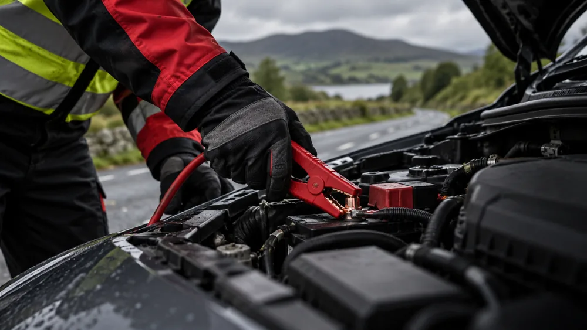

Give us a call.
Tell us your location, what’s happened and how many passengers are with you.
086 195 2598 ↗
Car or van won’t go? Our team comes to you, day or night, across Dublin and the surrounding counties.
Many breakdowns have a simple cause. Our experienced team helps with all makes and models of car and van, and where a roadside fix is possible we’ll get you moving again on the spot.
If your vehicle can’t be safely restarted, we’ll recover it — with you and up to six passengers — to a garage, your home or your destination.
A breakdown on a busy road or motorway can be dangerous, so we aim to reach you quickly and get your vehicle out of harm’s way. We’ve been helping drivers across Dublin and the surrounding counties for over 20 years.
Call for a free quote before we set off — we’ll explain the cost clearly, with no surprises.
Tell us your location, what’s happened and how many passengers are with you.
086 195 2598 ↗Switch on your hazard lights and use any safety equipment you have. Our team aims to reach you as quickly as possible.
Our service guidance aims for arrival in under 30 minutes. Timing depends on your location, traffic and availability; ask for an estimate when you call.
Tell our expert team exactly what went wrong. We’ll help get your vehicle moving or arrange recovery.
Your location (road, junction or landmark), the make and model of your vehicle, what happened, and how many passengers are with you.
We’ll recover your vehicle and take you and your passengers to a garage, your home or another destination.
Call 086 195 2598 for a free quote based on your location, vehicle and the help you need.
Breakdown assistance. Recovery. Reassurance.